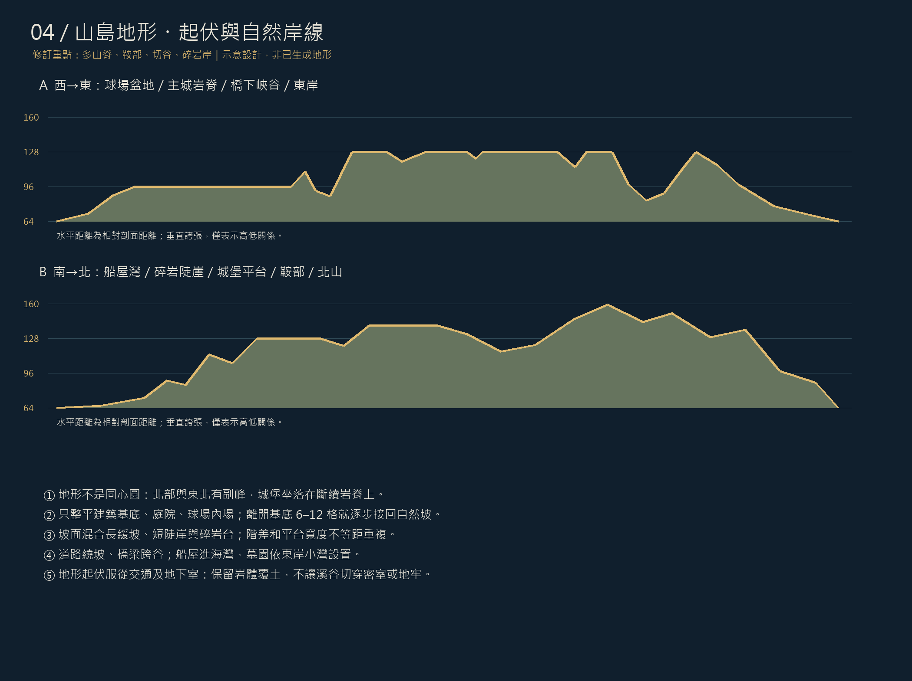
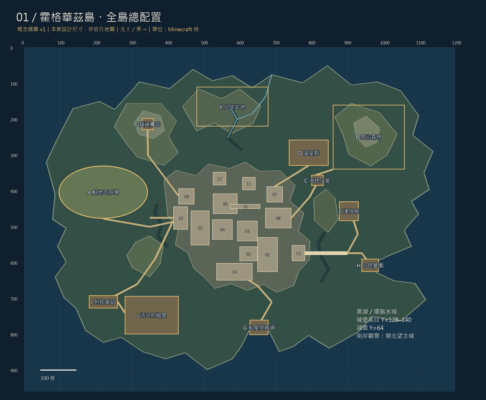
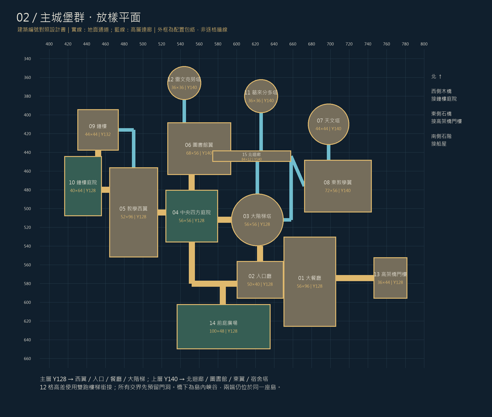
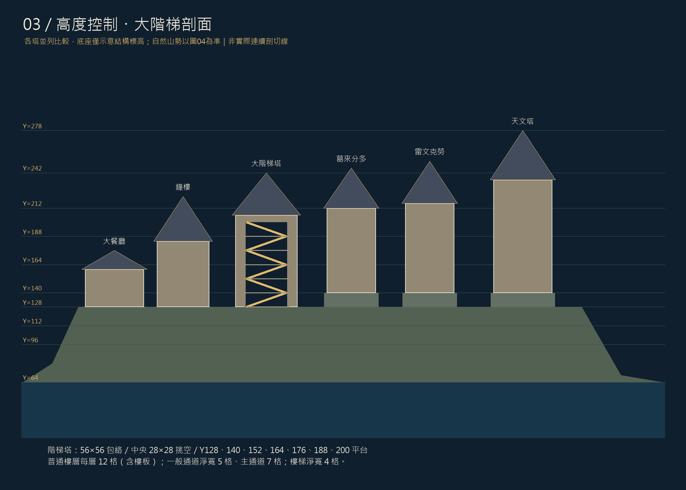

地形修訂／不要平頂、不要對稱山包
依本次要求：島嶼採自然起伏的山島，禁止把主城下方做成整塊平頂梯形底座。總圖中的色帶只是概念地形分區，不是等高距一致的精測等高線。以下地形要求優先於早期圖03的結構底座示意。

主城跨在不規則岩脊上，局部基底保持Y128／140；建築之間依通道、地下室覆土保留自然凹坡、岩溝和小台階。北部副峰約Y148–160；東北森林山峰約Y150–162；貓頭鷹塔所在丘陵約Y118–138，塔基Y130。峰頂偏心、有鞍部，不做左右對稱圓錐。
球場所在西側形成低盆地，內場與必要看台基底Y96；外圍丘陵Y100–118。南坡從城堡Y128落到湖面Y64，交錯安排8–22格岩壁、碎石緩坡與突出岩台，不能整面等距階梯。船屋以南開小灣；墓園所在東岸新增凹灣。北溪由岩地降入北岸，與主要建築保持距離。
地形分三層塑造：80–220格寬的大山脊、20–60格寬的坡肩與溪谷、3–12格尺度的岩台與侵蝕細節。自然坡多數局部高差3–12格，陡壁另設；避免用均勻隨機雜點堆出鋸齒山。只整平必要使用區，基底外6–12格開始不規則過渡，必要時用短擋土牆接坡。
道路沿等高線蛇行；城堡核心下方的密室與地牢上方至少保留6格完整岩體，建築基底不得被切谷挖空。東橋與西木橋跨真實凹谷；峽谷位置不得侵入已配置的地下房間。後續方塊建模以地形與室內碰撞檢查作最後調整。
設計定位
把霍格華茲做成一座可步行探索的完整島嶼：南面從黑湖看見峭壁、大餐廳與尖塔；西側是魁地奇球場；北東側留給森林、溫室與海格小屋。主城使用暖灰石牆、深色陡屋頂、密集尖塔及發光高窗，呼應提供的四張 Minecraft 畫面。
這份是完整範圍的總體設計 v1，不是已建成的地圖，也不是逐方塊施工圖。未生成 mcpack、mcstructure，未修改遊戲世界。尺寸、樓層及島嶼地理均為本案設計；不宣稱一比一還原特定電影、遊戲或影片作者的作品。截圖的字幕與介面只視為參考內容。
以電影式外觀為主，容納小說與電影的經典室內；貓頭鷹塔採獨立山丘方案。活米村與車站移入島上是使用者「整座島」需求的改編，設為第二階段。無法从四張透視截圖推回原作所有背面與房間，因此其餘部分採可施工的整合設計。
01／全島配置

用地框 1,200×960 格，含環島水域；陸地約 1,100×850 格，海岸不規則。北為 −Z、東為 +X；原點為用地西北角，湖面 Y64。主城不是孤立貼在平面上的房子，而是由 Y96 山麓、Y112 地下基座、Y128 主院、Y140 北部高台逐級抬升。
| 區域 | X / Z 範圍 | 包絡尺寸 | 基面Y / 最高Y | 設計內容 |
|---|
| A 魁地奇球場 | 96–344 / 330–478 | 248×148 | 96 / 154 | 248×148；內場 184×88；四學院主塔＋8座小看台，兩端各3門環 |
| B 禁忌森林 | 860–1060 / 160–340 | 200×180 | 100 / 162 | 密林、巨蛛空地、獨角獸林徑；只規劃景觀與場景 |
| C 海格小屋 | 800–834 / 356–386 | 34×30 | 110 / 132 | 雙體石屋、煙囪、南瓜田與巴嘴圍場 |
| D 溫室群 | 738–848 / 258–330 | 110×72 | 124 / 147 | 3座20×48溫室、8格走道、藥草院 |
| E 渾拚柳 | 878–932 / 430–484 | 54×54 | 110 / 148 | 獨立危險樹景、地下通道入口預留 |
| F 貓頭鷹塔 | 328–360 / 198–230 | 32×32 | 130 / 192 | 山丘上獨立塔；採電影式設計選擇 |
| G 船屋與碼頭 | 628–680 / 760–802 | 52×42 | 66 / 90 | 湖面到校入口；木棧橋、停船格與崖邊石階 |
| H 白色墓園 | 940–988 / 590–626 | 48×36 | 82 / 90 | 安靜湖岸、白墓、樹籬與短步道 |
| I 到校車站 | 180–260 / 692–728 | 80×36 | 78 / 98 | 本案移入岛嶼的交通節點；不宣稱原作地理 |
| J 活米村縮景 | 280–430 / 694–800 | 150×106 | 82 / 118 | 三根掃帚、蜂蜜公爵、桑科惡作劇店、尖叫屋；屬擴充景區 |
| K 北岸岩地 | 480–680 / 110–220 | 200×110 | 90 / 138 | 荒岩、瀑布源頭、步行觀景路 |
02／主城建築群

主城核心配置範圍 X416–782、Z348–650，約366×302格；含岩台、橋頭與外圍留地約440×400格。所有座標使用半開區間，例如 X650–706 表示 650≤X<706，共56格。圓塔尺寸指外接方形包絡。
| 編號／建築 | X / Z 範圍 | 包絡尺寸 | 基面Y / 最高Y | 用途 |
|---|
| 01 大餐廳 | 650–706 / 530–626 | 56×96 | 128 / 176 | 四張學院長桌、教師台、星空天花；下層廚房與赫夫帕夫入口 |
| 02 入口廳 | 600–650 / 556–596 | 50×40 | 128 / 164 | 沙漏、主門、大理石梯；東接餐廳、西接前庭、北接大階梯 |
| 03 大階梯塔 | 594–650 / 484–540 | 56×56 | 128 / 242 | 中央挑空、肖像牆、交錯樓梯；頂部接校長辦公室 |
| 04 中央四方庭院 | 524–580 / 480–536 | 56×56 | 128 / 132 | 露天草坪、水井、四邊拱廊；周圍另留 8 格迴廊 |
| 05 教學西翼 | 464–516 / 456–552 | 52×96 | 128 / 186 | 變形學、符咒學、魔法史；下層魔藥教室 |
| 06 圖書館翼 | 526–594 / 408–464 | 68×56 | 140 / 198 | 主閱覽室、禁書區、夾層書架；南側接庭院迴廊 |
| 07 天文塔 | 676–720 / 388–432 | 44×44 | 140 / 278 | 高塔、觀測平台、望遠鏡；全校最高輪廓 |
| 08 東教學翼 | 672–744 / 448–504 | 72×56 | 140 / 206 | 黑魔法防禦術、獎盃室、七樓走廊與萬應室 |
| 09 鐘樓 | 430–474 / 394–438 | 44×44 | 132 / 222 | 大鐘面、鐘擺中庭；上層醫院翼接西教學樓 |
| 10 鐘樓庭院 | 416–456 / 444–508 | 40×64 | 128 / 132 | 噴泉、石柱、通往木橋的門洞 |
| 11 葛來分多塔 | 608–644 / 362–398 | 36×36 | 140 / 246 | 胖女士入口、紅金交誼廳、男女宿舍螺旋梯 |
| 12 雷文克勞塔 | 526–562 / 348–384 | 36×36 | 140 / 252 | 門環謎題入口、藍銅交誼廳、星圖與高窗 |
| 13 高架橋門樓 | 746–782 / 552–596 | 36×44 | 128 / 186 | 雙塔門樓、城門、東側石橋起點 |
| 14 前庭廣場 | 536–636 / 602–650 | 100×48 | 128 / 132 | 抵達主視角、立像、餐廳外立面拍照點 |
| 15 北迴廊 | 574–658 / 438–450 | 84×12 | 140 / 158 | 連接圖書館、宿舍與東翼的上層交通 |
03／樓層與經典室內

| 層位 | 位置 | 經典場景 | 空間要求 |
|---|
| B2／Y88–103 | 03／05 下方 | 消失的密室：蛇像、雙排蛇柱、水道；女孩盥洗室以獨立豎井接入 | 80×32×16；位於 X520–600、Z456–488；不穿越大階梯承重核心 |
| B1／Y112–127 | 01 下方 | 廚房、食材庫、家養小精靈工作區 | 餐廳下方 48×80；東南側獨立服務梯 |
| B1／Y112–127 | 02／14 下方 | 赫夫帕夫交誼廳、圓門、桶形入口、兩組宿舍 | 交誼廳 28×24；宿舍各 20×24，與廚房側廊相通 |
| B1／Y112–127 | 05 下方 | 魔藥教室、藥材庫、史萊哲林交誼廳與宿舍 | 魔藥 28×32；交誼廳 28×24；湖景以封閉水槽造景 |
| L0／Y128–139 | 01／02／03 | 大餐廳、入口廳、大階梯基座 | 餐廳淨空 48×88；長桌 5×60 共4張；東西側通道各5格 |
| L0／Y128–139 | 05 | 變形學教室、校務小室、通往地下的樓梯 | 主教室 28×32；走廊沿庭院側配置 |
| L1／Y140–151 | 06／08 | 圖書館主層、禁書區、黑魔法防禦術教室 | 圖書館 48×40、禁書區 16×24 為內部分區；防禦術 36×28 |
| L1／Y140–151 | 05／09 | 符咒學、鐘樓機械中庭、醫院翼入口 | 符咒學 28×32；醫院翼置西翼上層，鐘擺區保持挑空 |
| L2／Y152–163 | 05／06／08 | 醫院翼、圖書館夾層、魔法史、獎盃長廊 | 醫院翼 32×40；圖書館夾層不填滿中央挑空 |
| L2／Y152–163 | 11／12 | 葛來分多與雷文克勞交誼廳 | 每塔直徑36；交誼廳有效直徑26，周邊留螺旋梯 |
| L3–L5／Y164–199 | 11／12 | 四學院中兩座高塔的男女宿舍；浴室與儲物 | 每層兩組房間，塔身不得整層切斷主樓梯 |
| L3／Y164–175 | 08 | 女孩盥洗室、愛哭鬼麥朵場景、密室入口 | 20×24；東翼下設豎井、Y96 水平密道通往B2 |
| L4／Y176–187 | 08 | 萬應室（展示／訓練室）與七樓走廊場景 | 有效48×32；小說樓名保留為場景命名，不強行等同本案樓層編號 |
| L5–L6／Y188–211 | 03／05 | 校長辦公室入口、圓形辦公室、占卜教室 | 校長辦公室設03上部；占卜放05北端小尖塔 |
| 高塔／Y212–235 | 07 | 天文觀測平台、螺旋梯、鐘形頂亭 | 主平台Y224；最高屋脊Y278，屋頂空間不冒充可用樓層 |
| 支線／Y100–115 | 05 西側地下 | 三頭犬房、魔鬼網、飛行鑰匙、巫師棋、魔法石終室 | 本案重組成地下線性展區，包絡 X420–516、Z520–560；與地牢分牆 |
| 支線／各層局部 | 05／08 | 意若思鏡、消失的櫥櫃、級長浴室、活動肖像與秘密門 | 作為可選室內場景，保留入口與退路，不以裝飾封死主要交通 |
地下室均需置於乾燥岩體內；湖景地牢使用局部玻璃水槽表現，不假裝Y112的房間自然低於Y64湖面。密室、魔法石關卡、廚房與宿舍分開配置，保留檢修通道。室內尺寸是後續分房約束，尚需各樓層逐格牆線圖驗證。
04／道路、橋梁與到校體驗
| 路線 | 連續動線 | 尺寸與控制 |
|---|
| 新生船路 | 南側水域 → G船屋 → 崖邊折返石階 → 14前庭 → 02入口 → 01餐廳 | 石階從Y66到Y128，高差62；至少62格水平踏步行程，拆成4跑＋平台，淨寬7 |
| 日常主線 | 02入口 → 03階梯 → 北迴廊 → 圖書館／東翼／宿舍 | 主走廊淨寬7、次要5；每12格層高設雙跑梯，踏步總水平行程至少12，平台深5 |
| 木橋外遊線 | 10鐘樓庭院 → 西侧木橋 → 山路 → 球場或車站 | 木橋 X350–416、Z472–480，長66、寬8；橋面Y128；西岸落橋後沿山路降至Y96 |
| 石橋入校線 | 島東側環路 → 高架石橋 → 13門樓 → 餐廳側通道 | 石橋 X782–900、Z569–579，長118、寬10；橋面Y128；橋下谷底Y80–96 |
| 課外教學線 | 東翼 → 海格小屋 → 森林；天文塔腳 → 溫室 | 室外主路7格、林徑3–5格；每個岔路有地標與照明 |
| 探索支線 | 女孩盥洗室 → 豎井 → 密室；地牢 → 魔法石關卡 | 密道淨寬3、淨高3；設回程梯，避免單向跌落後困住玩家 |
高台與山麓的道路沿等高線蛇行。所有橋頭必須先做岩岸與橋墩定位，不能依外觀直接把橋搭向空中。
05／外觀模數與重點尺寸
| 構件 | 設計規格 |
|---|
| 牆與立面 | 外牆厚3；內隔牆厚1–2；窗間柱模數7；每個窗洞寬3、高7，窗頂做尖拱；大型餐廳窗高15 |
| 屋頂與尖塔 | 餐廳屋頂起點Y160、屋脊Y176；大階梯塔塔身至Y206、尖頂Y242；天文塔塔身至Y236、尖頂Y278 |
| 大餐廳 | 外56×96、內48×88；4張5×60長桌；桌間4格，兩側各5格；前後剩餘28格分給門廳、教師台及過道 |
| 大階梯 | 56×56外包絡，28×28中空；環形廊、扶壁與樓梯分配在周邊14格帶內；平台每12格高；先做固定交錯梯 |
| 魁地奇 | 248×148外場；內場184×88；4座學院主塔16×16、高58；8座小看台12×12、高34；門環立柱高18／24／30，環外徑9 |
| 溫室 | 3座20×48並排，棟間8格；玻璃坡頂與石磚矮牆；通道淨寬3，種植床不阻擋出入口 |
| 小屋與船屋 | 海格小屋34×30包絡，高22；船屋52×42含外平台，高24；碼頭貼湖面但室內地板高於水面 |
| 主要材質意向 | 牆：石磚／安山岩／凝灰岩色系；屋頂：深板岩色系；木構：深色木材；室內：暖色木地板與暖光；具體方塊ID待版本確定 |
| 魔法表現 | 星空天花、肖像、懸浮蠟燭與密門可先做靜態造景；活動階梯、魁地奇玩法、萬應室變換、樹木攻擊需要另行機關／指令設計 |
06／還原清單與分期
第一優先：峭壁主城輪廓、大餐廳、大階梯塔、天文塔、鐘樓、兩座宿舍塔、四方庭院、木橋、高架石橋、船屋與四學院球場。這些決定「一眼看出霍格華茲」。
第二優先：四學院交誼廳與宿舍、校長辦公室、圖書館禁書區、魔藥／變形／符咒／黑魔法防禦教室、醫院翼、獎盃室、盥洗室、密室、萬應室與魔法石關卡。
第三優先：海格小屋、溫室、禁忌森林、貓頭鷹塔、渾拚柳、白墓及細部道具。活米村與車站屬島上擴充區；斜角巷與魔法部不塞進學校島。
| 順序 | 施工範圍 | 進入下一階段的條件 |
|---|
| 1 | 島嶼海岸、等高台地、峽谷與湖面 | 南岸看向主城輪廓不受前景山丘遮擋；橋頭均有實地 |
| 2 | 主城所有包絡、道路、樓梯與橋樑 | 從船屋、車站、東橋都能走到前庭；Y128與Y140可互通 |
| 3 | 主城塔身、屋頂、尖塔、拱廊 | 南／西／東三面剪影有高低層次；天文塔最高，大餐廳仍清晰 |
| 4 | 主要室內與垂直交通 | 每間主要房間都有入口；塔頂可抵達；地下區不互相穿模 |
| 5 | 球場、溫室、小屋、森林等校地 | 四學院看台識別完整；林徑可走；樹冠不侵入窗與橋 |
| 6 | 道具、照明、密道與擴充村落 | 夜間主要路線可辨；秘密場景可往返；再考慮動態魔法功能 |
尚未鎖定 Java／基岩版與遊戲版本，因此本版不承諾匯入格式或模組相容性。正式生成前再確定平台、最終比例及主要採用的電影時期；本版最高Y278只是設計控制值。
07／圖紙邊界與參考
本次提供全島總圖、主城配置、垂直剖面、建築尺寸座標、樓層場景表與施工順序。未提供每層逐格牆線、逐段屋頂切片、紅石／指令設計或材料精確用量；這些必須在總配置確定後從方塊模型產生，不能從概念图推估為精確清單。
參考圖對應：圖1→魁地奇看台與學院紋章；圖2→島上峭壁與主城剪影；圖3→高密度塔群、尖拱與深色屋頂；圖4→多層挑空階梯與肖像牆。
官方資料用於確認場景性質，並非本案座標來源：大餐廳、校園與設施、四學院交誼廳、貓頭鷹屋。查閱日期：2026-09-20。